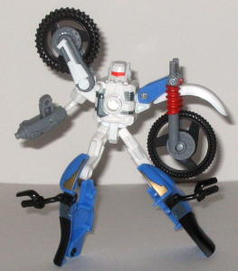

Allegiance : Autobot
Size : About the size of a GIJOE action figure
Color Scheme : Black, white, and some pale light blue, metallic silvery blue, and orangish red
Rating : 5.6
Set Price : $10 (U.S.)
 Energon
Kicker
Energon
Kicker
Allegiance
: Autobot
Size
: About the size of a GIJOE
action figure
Color Scheme
: Black, white, and
some pale light blue, metallic silvery blue, and orangish red
Rating
: 5.6
Ah, the stupid kid that Hasbro has to have in every Transformers series. Well, Kicker doesn't have too many things wrong with him-- he has articulation at every reasonable point, pretty good proportions, and great posability. (Though he does have small feet, so he's not very stable...) But he doesn't DO anything. I mean, even when Hasbro put out Transformers stuff in the past that didn't really transform (like the Armada roleplay sabers ), they at least gave them a sub-mode, or something like that. Nope; Kicker is just an ordinary action figure with no gimmicks whatsoever. That may be enough for some people, but it's not for me. I want my figures to transform, or at least have a bunch of really cool gimmicks. I mean, really, if I wanted suited-up futuristic humans, I'd buy Power Rangers, thank you very much. But even if you don't mind if he doesn't transform, Kicker does have a few things wrong with him. For one thing, even though he does have a good number of paint apps, he had some red straps around his chest in the show, and even though they're detailed on the mold, they aren't colored red-- they're just the same old black on this toy. A few other details on his helmet and such should also be red and they aren't. Also, it's advertised on the back of the package that Kicker can ride High Wire, but he can't ride it any better than any other random Transformer that's about his size. There are no pegs or anything to hold him to High Wire, and his hands can't fit over the handle bars. So it basically means you have to perform a balancing act to get him to stay on the danged bike. Wonderful move there, Hasbro... One thing I was surprised, though, is that Kicker does have an Autobot spark crystal on his backside, on his backpack. So you can put an Energon chip on that thing if you want-- though his hands aren't big enough to hold any Energon weapons, so I don't know why'd you want to.
 High
Wire
High
Wire

Allegiance
: ....Autobot!? What the...?
Size
: Between Basic and Deluxe
Difficulty of Transformation
: Easy
Color Scheme
: White, pale light
blue, black, light gray, and some orangish red, dull gold, and metallic
silvery blue
Rating
: 7.9
The larger version of
High Wire is much more detailed than his
Minicon
version
. Though it does bug me quite a bit that High Wire is classified,
both on the toy and on the package, as being an Autobot. Yes, he's ALLIED
with the Autobots, but he's a Minicon himself! What, are all Minicons now
just default Autobots who happen to be small? As if the bad guys weren't
outnumbered enough already... Though at least he doesn't have any Powerlinx
ports-- now THAT would be too much. Anyways, in dirt bike mode, High Wire
looks pretty cool. The proportions check out prety well, and there are
little details, like the spokes in the bike wheels, springs on the bars
above the front tire, and a little exhaust pipe near the back of the bike.
He also has the obligatory kick stand to keep him upright. There is also
a decent amount of paint detailing on him as well; many of the mechanical
parts below the seat of the bike are painted, as are some of the details
on the top of the bike seat and around the handlebars. However, just like
I mentioned in Kicker's review, High Wire doesn't have any tabs on him
to really hold Kicker onto him, which gets some points subtracted from
both of the toys in this set. Also, there are some holes here and there
in the lower body of the bike where you can see through to the other side
when you really shouldn't be able to. They aren't really big, just noticeable.
High Wire's robot mode
looks very similar to his Minicon version, but with better overall proportions
and detailing because you don't have to worry about him forming a third
of Perceptor. The head now looks much clearer and more defined than on
the Minicon version, and his visor is now actually PAINTED, for one thing.
He now has a much more defined chest as well, with an Autobot (grrr) spark
crystal and paint detailing. His legs are a bit long proportionally, and
the upper legs bend at an odd place, though. I also wish Hasbro had found
some way to give High Wire either some kind of hand on his left arm or
a sawblade or something, since this was a larger version and thus they
didn't have to just settle for that odd-looking tire-arm. Though at least
they did give High Wire a proper lower arm on his right hand, as it can
fold out from the exhaust pipe instead of just being molded onto it like
it was for the Minicon version. The upper arm on his right arm also is
rather skinny-- I could see it being broken off under a bit of pressure.
The pedals coming out of High Wire's chest are also a little distracting.
Oh, and the peg that holds High Wire's head up out of his chest in this
mode does tend to collapse in a little easier than I'd like-- you really
have to push it up in there to get High Wire's head to stay up. But still,
High Wire is a pretty good figure in this mode overall, with great articulation--
he can move at the waist, hips, knees, his left shoulder, side-to-side
on his right shoulder, and at his right elbow at two places.
I could care less about Kicker, as he doesn't really do anything, but High Wire is a pretty decent Transformer with not too many problems. Though since he comes with Kicker, he is smaller than your average $10 toy, so you should take that into account when considering purchasing him. So though this set is by no means my most recommended toy of Energon, it's still worth at least considering if the idea of an up-sized Minicon intrigues you.
Review by Beastbot